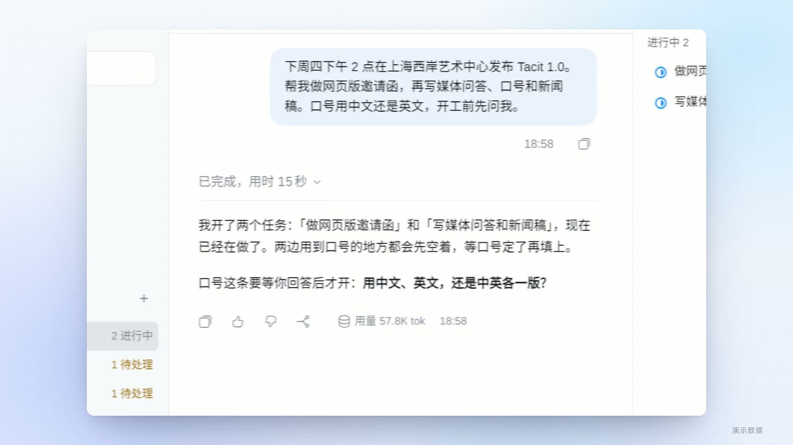

Notes on building AI products · Long read
How DS-buddy thinks: from multi-agent to context
The short post gave only the conclusions. This one lays out the grounds: which abstraction each product chose, how context actually travels between agents, and how each point landed in DS-buddy.
Hi everyone. This is the long version of the short post. Same line of thought, with comparisons and screenshots added.
The first question: people have become the glue
Agents keep getting more capable, and the people using them keep getting busier. Busy carrying things, mostly: copying a chat thread, pasting a file, moving a conclusion from one conversation into another, telling a newly started agent where things stood yesterday. Multi-agent products add more: naming agents, setting up their skills, and watching a room full of conversations to see who is stuck. By the end of the day a person has mostly been glue. The work that is actually theirs, thinking the direction through and making the call, is what there is no time left for.
People have measured this:
- A 2022 study in Harvard Business Review followed 20 teams. As reported at the time, a person switched between apps and websites about 1,200 times a day and spent just under 4 hours a week getting reoriented afterwards, roughly 9% of a year's working time.
- Gloria Mark of UC Irvine observed interrupted work. The figure she gave in an interview: interrupted work was resumed after 23 minutes and 15 seconds on average.
- In March 2026 BCG published a survey of 1,488 US workers in Harvard Business Review and called the fatigue of using and watching AI beyond one's capacity "AI brain fry". As The Decoder reported, people who have to keep watching AI at work spent 14% more mental effort and had 19% more information overload, and self-reported productivity peaked at three AI tools at once and dropped again with more. All of it is self-reported.
The first two figures are from before AI. The third is about now: the tools have become agents, and the carrying and the watching haven't gone away.
So when you build an AI product, I think one question comes before all the others: how to lower the bandwidth a person has to spend talking to the AI. The less the person has to say the better, and the AI still has to get the job right.
I want people to do five things only: state the goal, point at things, mark right and wrong, watch comfortably, and stop repeating themselves. Every design below removes some talking that falls outside those five.
Why everyone went to agents first
Because we are used to organising context through people, each with a job of their own. So most of what the past year's products put in front of you is "people".
| Product | The abstraction you face | What you manage |
|---|---|---|
| Raft, Multica, Claude Code Agent Teams | Agents are teammates, with names, identities, memory and their own inboxes | Names, skills, who is stuck |
| Manus Cue | Every agent has its own email, phone number and wallet | A team to run |
| Claude Code, Kimi Code, Codex | One main agent plus disposable subagents | Writing the task out in full, waiting for the summary |
| Manus Wide Research, Kimi Agent Swarm | One orchestrator plus hundreds of workers | One question at a time |
| Genspark, Cursor 2.0 | Several models each doing the same job | Picking the model, picking the result |
| OpenClaw, OpenHuman, ChatGPT Pulse | One assistant that is always there | One conversation that keeps growing |
| dsh-superagent | Tickets and one panel, with sessions hidden completely | Only the panel |
But what an AI needs in order to work is only two things: context and a model. Taken apart, an agent is some context plus a model. My own code is the same: an "assistant" is three things, a name, a persona and a default model, and sessions are opened per task.
People differ a lot from one another, which is why we divide work between them. Agents hardly differ at all: give the same model a different persona and the "designer" becomes the "engineer". What really differs is the model behind them.
One step further: what is the difference between opening three conversations in one project and getting three agents to work on the same thing? I thought about it for a long time and I don't think there is one. Either way it is three contexts, each with a model behind it. A conversation (a session) is just how the agent's side holds context: one line that only grows. People don't think in conversations, and a task shouldn't be boxed into one either.
So my view is this: managing agents is managing context. Wrapping context in a named character adds a layer nobody needs. Here is how each of five ways of organising agents does it.
Role teams
Examples: Multica, Raft, Claude Code Agent Teams, DS Bot, Manus Cue.
How they work: Multica treats agents as teammates with profiles that pick up issues on a board, raise blockers and form squads. Raft says it most directly: agents are first-class citizens with memory, identity and their own inbox, and they @ teammates and claim tasks in channels. In Claude Code's Agent Teams every teammate is a separate instance, coordinated through a shared task list on disk and messages. Manus Cue gives every agent its own email, phone number and wallet. DS Bot is built on DeepSeek Harness like DS-buddy, with a steward bot and bots that hand off to each other with @.
My view: this is the most intuitive approach, and the person pays for it. The unit is the agent and its conversation, so finding out who is doing what, who is stuck and how far a job has got means digging through conversations. The more the agents resemble people, the more you resemble a manager.
Orchestrator and workers
Examples: Anthropic's research system, Manus Wide Research, Kimi Agent Swarm, and the subagents in Codex and Claude Code.
How they work: Anthropic's research system runs a lead agent with parallel subagents. In their internal evaluation it beat a single agent by 90.2%, at about 15 times the tokens of a normal chat. Manus Wide Research sends out hundreds of workers, each with a fresh context, and says plainly that it doesn't suit tasks whose steps depend on each other. Kimi's Agent Swarm trains its orchestrator and schedules up to 300 subagents.
My view: I think this group is right. It solves handling many unrelated items at once, such as researching a hundred companies. It helps less with work that has dependencies and takes days, and it remembers nothing afterwards.
Parallel attempts
Examples: Genspark, Cursor 2.0.
How they work: Genspark gives the same job to several models and an aggregator merges the results. Cursor 2.0 runs several agents in parallel in their own working copies, and the same task can be done by several models for you to pick the best.
My view: by this point nobody cares what an agent is called. You care which model ran and whether the result holds up. That already shows the role layer can be removed.
Always-on assistants
Examples: OpenClaw, OpenHuman, ChatGPT Pulse.
How they work: OpenClaw stays running on your machine. Its personality, rules and memory are text files in a workspace, and it wakes on a timer. OpenHuman connects more than a hundred apps and, each turn, picks relevant content within a token budget with sources attached. ChatGPT Pulse analyses your chat history and connected mail and calendar overnight and gives you a few cards in the morning.
My view: they work hard at making context arrive by itself, which is the direction I agree with most. But the organising form is mostly still one conversation or a stack of cards. A job that runs for days in several parts is hard to follow there.
Supervision panels
Example: dsh-superagent, a research prototype open-sourced by DeepSeek.
How it works: work comes in from GitHub or Feishu, passes a gate and triage, becomes a ticket with a stated mandate, and goes to an execution session. Sessions are hidden completely and people look at one panel. Its principle is stated plainly: use as little human attention as possible.
My view: this is the group closest to how I think. A session should be an implementation detail. The difference is who it serves: a team and one repository there, one person and their many projects in DS-buddy.
The misunderstandings and failures this layer brings
Having agents pass messages to each other is mostly unnecessary. Messages get distorted between people, and they do between agents too, at the price of an extra round.
- Paraphrase loses things. In Don't Build Multi-Agents (June 2025) Cognition gives an example: build Flappy Bird by giving the background to one subagent and the bird to another. Neither sees the other's work, so the background looks like Mario and the bird doesn't look like Flappy Bird.
- Paraphrase also adds things. I have been burned by this myself: in an early version I gave the assistant a goal in one sentence, and when it handed the job to the working agent it added a few requirements I had never stated. Downstream they were taken as my own words and followed. Now a handoff may only quote my own words, and code checks that the sentence really came from me.
- What one agent says gets taken for what you said. The more assistants there are, the easier it is for authorisation to be passed along falsely. So several products label where a message came from: Agent Teams marks messages as coming from another Claude session, and Multica separates "on whose behalf" from "with whose permission".
- Two agents grab the same job. Nobody relies on the prompt alone to prevent that: Agent Teams use file locks and Multica serialises claims in the database per (issue, agent).
- Cost. The 15 times token figure above is the price of opening more windows.
In April 2026 Cognition wrote a second post and narrowed its conclusion to one sentence: extra agents can contribute judgment, and writes should stay single-threaded. Its verdict on swarms where agents talk to each other freely is that they mostly scatter effort.
Why fork works better most of the time
A fork is simply shared context: what is already known goes across as it is. Between agents, context travels by paraphrase, and some of it is lost on the way.
The source code shows this. A teardown of the source of 8 open-source multi-agent projects (main branches from July to October 2026; Claude Code isn't open source, so its entry follows the official documentation) reaches a consistent finding: no project shares a context window. They differ in only three things: how much parent history the subagent inherits, what the parent's task description looks like, and what shape the result comes back in.
Outbound, what the subagent sees:
| Project | What the subagent sees |
|---|---|
| Claude Code subagent (default) | Its own system prompt, environment details, CLAUDE.md, and a delegation message written by the main agent. It doesn't see the parent conversation or the files already read |
| Claude Code fork | The parent's full conversation. Used when the job needs all the background and shouldn't pollute the main window |
| Kimi CLI | Only the prompt, plus its own history. Its system prompt says outright that the main agent can't see its context, only its last message |
| Gemini CLI | A local subagent gets only the task description, which must include the user's original objective. A remote agent gets only a contextId and a taskId |
| Codex | spawn_agent passes only the task. A fork keeps user messages and final answers and drops reasoning and tool round-trips |
| OpenAI Agents SDK handoff | The whole conversation by default. It can be filtered, or compressed into a summary first |
| LangGraph, AutoGen | They read and write one shared state, or everyone shares one message thread |
| CrewAI | Only the output of the upstream task. Its prompt says the other side knows nothing about the task |
On the way back, what the parent gets:
| Project | What the parent gets | Fallback |
|---|---|---|
| Gemini CLI | A JSON report from complete_task, validated against a schema | On timeout or too many turns, one grace turn that may only hand in the result |
| Kimi CLI | The text of the last message | Asks once more if it is under 200 characters |
| Codex | The final answer, by waiting or by a completion notice | A running agent can be messaged, given follow-up work or interrupted |
| Claude Code | The final message. Background tasks come back as notifications | Can be resumed with the subagent's own history |
| LangGraph Supervisor | Only the last message by default | Can switch to full history |
| OpenAI Agents SDK handoff | Nothing comes back. Control moves over | Filtered or compressed history |
| AutoGen | Each turn goes straight into the shared thread | A bounded context can be swapped in |
My view: the default is to pass one description and collect one last message. Context is passed exactly as well as the task description is written, and several projects' prompts tell the parent to write everything down. Fork is the exception: Claude Code and Codex both keep a fork mode for when all the background is needed. Among the patterns Cognition found to actually work, one is forking the full context over to consult a stronger model.
But a fork doesn't fix a main conversation that keeps growing
A fork drops nothing, and it trims nothing either. It carries all the background across, at the price of a window that starts large and costs more. The main conversation keeps growing too, until it has to be compacted, and compaction is lossy: details go missing. A model also gets confused when context grows too long.
Looking back, what multi-agent is really good for is at the other end: it gives each piece of work a clean context of its own. Take away the names and the roles, and what is left is a way of managing context. What multi-agent is really for is giving the AI a good environment for managing context, organised around the task itself.
| Approach | The context for each piece of work | The words in it |
|---|---|---|
| Multi-agent | Clean, one per piece of work | Paraphrased: some lost, some added |
| Fork | Carries the whole history | Unchanged |
| A context pack designed from the start | Clean, one per piece of work | Your own words, verbatim |
I want both. So I think the best answer for context has to be designed on purpose from the start. It doesn't grow out of a conversation that just keeps going.
Designed from the start: the person says three things, the AI splits the work
Which way should that be built? Not, I think, by having people run it: setting up channels, forming groups, deciding who to @. A person only needs to say three things clearly: what to do, where the context is, and what the standard is.
What to do. State a goal in the project. This time I said: we launch next Thursday, make an invitation, then write a media Q&A, a slogan and a press release, and ask me before starting whether the slogan is in Chinese or English. It opened two tasks that started together. It didn't open the slogan one and came back to ask first.


Where the context is. Point at it with @: a project, a file, or another conversation. Every task's output goes into the project's shared files, and other tasks read it directly, so I relay nothing.

What the standard is. Every task has a "what counts as done" list. When it is finished it comes to me, and the job is done only after I accept it. The assistant can't say "finished" for me.

The AI then splits that into tasks (threads), and each task carries a context pack. Think of it roughly as a goal file.
The task details page is that pack as a person sees it:

That pack is the thing to maintain over time. In the product it comes down to these:
- Your own words go in verbatim. When the project assistant cites your sentence in opening a task, the server passes it to the executor as written. Anything the assistant adds is marked separately and doesn't count as your request.
- Progress is written back. Deliveries, questions and failures are recorded on the task. State follows the job, not the session.
- Only what is useful goes in. Large material sits in the project's shared files and only the path is passed. What the personal assistant brings over from the timeline and memory comes with its source, as reference only, and doesn't count as your request.
- Definite judgments go to code. Whose words count as authorisation, whether a quote really is in the original message, whether the same thing was raised twice: code checks these and the model only interprets.
Agents are tools, and a runtime can always be started again
As for the agents that do the work for a while, they are really tools. Their state is fragile and doesn't need much maintaining: each is a runtime, and the context is injected again each time.
In DS-buddy a task runs in a DeepSeek Harness session by default and can be switched to Claude Code or Codex per task. On a switch the new executor receives the record kept on the task, and what you see stays the same. The same job continues the same session, and only a different job starts a new one.
There are plenty of details here: whether each agent starts in a brand-new context, and how to save tokens around the cache. Others have put real work into this. Multica keeps the fixed brief first and appends each run's information at the end. Raft found, in one production reading, that 27.1 million of 28.6 million prompt tokens had missed the cache, and then changed to freezing the system prompt per session and sending changes as incremental notices.
I'm not sure DS-buddy's current design is the best one. But these shouldn't be details a user can feel.
Today's products expose too much
I have looked at a lot of similar products and learned a lot from them.
Multica and Raft both offer a very good layer of abstraction. Multica uses tickets: agents pick up issues on a board and write results as comments. Raft uses group chat: agents sit in channels, read when they are @-mentioned, and claim tasks themselves. These are good ways to organise, and results land on a shared record that people and other agents can see. Claude Projects goes another way: several conversations in a project share one set of material and instructions, with no agent layer at all, but only with Claude's models, and the material is mostly put there by the person.
I borrowed all of these: a lasting record for each piece of work, results landing where everyone can see them, and several conversations in a project sharing their background.
It still isn't effortless enough. In Multica and Raft the agents still stand at the front: someone has to set up the channel, usually open the issue, and often decide who takes what. For a person, building context and dividing up the work is itself hard work, so the glue work has only moved somewhere else. Ideally the AI does that layer.
| Architecture | How context gets in | Organised by | What you manage | How you know it's your turn |
|---|---|---|---|---|
| Role teams | You feed it | A board or group chat | Names, skills, progress | Some have an inbox |
| Orchestrator and workers | From scratch each time | One question at a time | Workers are invisible | Only the final answer |
| Parallel attempts | From scratch each time | One question at a time | Only the model choice | You pick the result |
| Always-on assistants | Messages, apps, files | One conversation | Sometimes rule files | Cards or timed reminders |
| Supervision panels | A repository and group messages | Tickets | Only tickets | The panel |
| DS-buddy | Screen, Feishu, files, what you say | Projects and tasks | No names, nothing to configure | Waiting on you |
This table is my reading of each product's public material. It marks a kind of approach and doesn't score any product.
The most important design: collecting context
For the AI to do the dividing itself, it first has to have taken in enough of your context. In Multica and Raft, how a job is split and what background each piece carries is still mostly decided by the person. So the most important design in DS-buddy is collecting context.

This is how it is made:
- The app, window title and text on screen are read once a minute, and Feishu messages every 2 minutes. All of it is read-only, and screenshots stay on your computer.
- Every 10 minutes it cuts a window and hands it to one small-model call, together with what you were doing before and which projects you have.
- The model writes 0 to 3 activities in your own task wording, and files one under a project when it clearly belongs there.
- Code checks the sources: every activity must point back to raw records in that window, and anything that can't is dropped.

Two boundaries:
- What is observed is data. It doesn't become your authorisation. Any request that appears on screen or in a message is treated as material, never as an instruction.
- Not everything is poured into the window. Raw records go to storage, and the model takes only the part that concerns the job at hand.
Files on your computer go another way: a small program on your computer connects out, and your computer decides which folders it may read.
Collecting context automatically is nothing new
| Product | How it collects | What the collection is for |
|---|---|---|
| Screenpipe | Records screen and audio continuously, on your machine | A searchable history that other AI tools can query over MCP |
| AirJelly | Reads the active window of the apps you allow | Rewind and chat, and Codex or Claude Code can recall this context |
| Littlebird | Reads the text of the active window through accessibility without recording the screen, and transcribes meetings | A memory for its own assistant to use |
| Computer History in Codex | Logs clicks, typing and app switches through accessibility, takes no screenshots, off by default | Local memory files for ChatGPT and Codex |
This table follows each product's public material and press coverage. For reading the screen, DS-buddy uses Screenpipe itself.
From what I have seen, they mostly stop at remembering and being searchable: the context is stored, and a person or an agent fetches it when needed. Proposing a piece of work from the context it has seen, splitting it, getting it done and bringing it back to you for the call: that loop is still left for the person to close.
It is the loop DS-buddy wants to close. The timeline goes into the context layer, where the personal assistant can read it at any time and every entry can be checked against its source. When it hands a job to a project, what goes across is your own words and the related material. Messages someone is waiting for you to answer are listed in Waiting on you automatically. At night it reviews the day and leaves up to three cards for the morning. When work is finished, it comes back to that same board.
You only make the calls
I think this is how we will work: people speak only where they are really needed, to state a preference, make a trade-off, give the one piece of direction that matters, and stop being carriers of information.
Once things run in parallel, the hard part is keeping track. Waiting on you is one board across projects that lists only what needs you: decisions, acceptances, failures, and messages someone is waiting for you to answer.

- Cards have no buttons. Click a task card to open the task. Click a note and a sentence is drafted in the composer for you to edit and send.
- The personal assistant does no project work. It looks across tasks. When your computer is idle at night it reviews the day and leaves up to three cards for the morning: one thing you could start, one thing worth a look and one remark, each with its source.
- Whether a job is done and whether something is still running are separate. Queued must not pass for running, and the end of a turn is not the end of the job. Done exists only after you accept.
Tacit, as in tacit understanding
The assistant inside is called Tacit by default, as in tacit understanding. I think a really good buddy should already know everything relevant to the job before you open your mouth. By then you won't need to know how many agents are behind it, or what they are called.

- "About you" records only what you said yourself. Each item carries your words, and code checks they really are yours. Fix what is wrong and forget what you don't want.
- You don't configure skills. When you raise the same problem after delivery three times, it drafts new working instructions overnight. The draft changes only how the work is done and adds no permissions. In the morning you choose the new version, one trial run, or the old version.
- It doesn't act in your name. Without a word from you it makes no decision, accepts nothing and sends no message. Feishu and your folders are read-only, and only the ones you allow.
What isn't good yet
- Feedback still depends mostly on people. I'm still finding out which steps can go to automatic checks.
- The timeline isn't always right. Neighbouring windows can be pulled along by the one before and written up as the same activity. The raw records are kept, but you have to notice.
- Tasks are split by the AI, but a project is still created by you, or by the assistant when you ask.
- Switching the executor takes effect only after a turn ends, and there is no good answer yet for handing over mid-turn. Codex as an executor has not yet been verified through a complete task.
- How each agent's context is put together when it starts, and how the cache is used: I'm not sure the current way is the best.
- More context needs more protection against contamination. Marking the source of every item is a first step, and real use will show whether it is enough.
Getting started
DS-buddy is an open-source plugin for DeepSeek Harness. It needs DeepSeek Harness 0.2.x and Node 24. After installing, the sidebar gains a personal assistant and projects, and models follow your DeepSeek Harness configuration. Create a project and state your first goal. Reading the screen and files needs a small program on your Mac. Projects and tasks work without it.
The code is at github.com/DKKD13/tacit-dsh.

About the images: the ones with film captions come from the demo film. The interface is real, the data is demo data, and the one marked as an illustration is drawn. The other screenshots come from a real run on a fresh install.